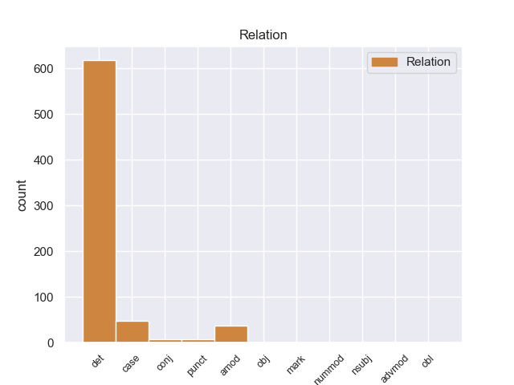
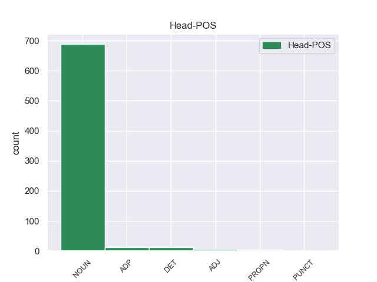
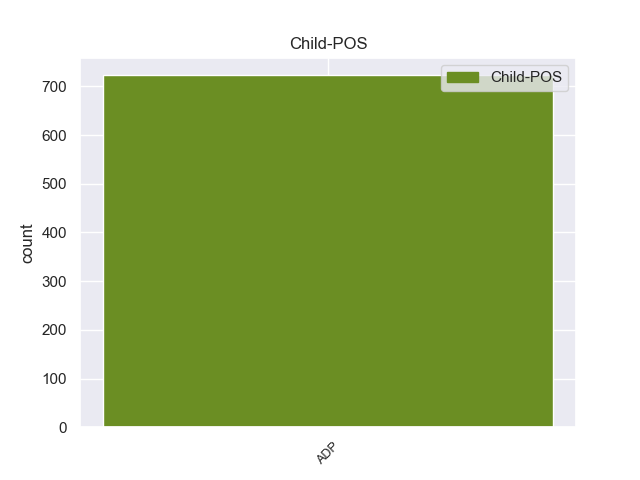

Distribution of features within this leaf



Agreement Rules sorted by frequency.
- When the dependent token is the determiner(det) of the head token, and the dependent token is ADP.
1 Hombres _ _ _ _ 0 _ _ _
2 , _ _ _ _ 0 _ _ _
3 mujeres _ _ _ _ 0 _ _ _
4 y _ _ _ _ 0 _ _ _
5 niños _ _ _ _ 0 _ _ _
6 llevan _ _ _ _ 0 _ _ _
7 la _ _ _ _ 0 _ _ _
8 parte parte NOUN _ Gender=Fem|Number=Sing 0 _ _ _
9 superior _ _ _ _ 0 _ _ _
10 de _ _ _ _ 0 _ _ _
11 la la ADP _ Definite=Def|Gender=Fem|Number=Sing|PronType=Art 8 det _ _
12 cabeza _ _ _ _ 0 _ _ _
13 completamente _ _ _ _ 0 _ _ _
14 rasurada _ _ _ _ 0 _ _ _
15 , _ _ _ _ 0 _ _ _
16 las _ _ _ _ 0 _ _ _
17 mujeres _ _ _ _ 0 _ _ _
18 dejan _ _ _ _ 0 _ _ _
19 caer _ _ _ _ 0 _ _ _
20 hacia _ _ _ _ 0 _ _ _
21 atrás _ _ _ _ 0 _ _ _
22 el _ _ _ _ 0 _ _ _
23 resto _ _ _ _ 0 _ _ _
24 de _ _ _ _ 0 _ _ _
25 el _ _ _ _ 0 _ _ _
26 cabello _ _ _ _ 0 _ _ _
27 , _ _ _ _ 0 _ _ _
28 mientras _ _ _ _ 0 _ _ _
29 los _ _ _ _ 0 _ _ _
30 hombres _ _ _ _ 0 _ _ _
31 se _ _ _ _ 0 _ _ _
32 hacen _ _ _ _ 0 _ _ _
33 un _ _ _ _ 0 _ _ _
34 moño _ _ _ _ 0 _ _ _
35 . _ _ _ _ 0 _ _ _
1 El _ _ _ _ 0 _ _ _
2 actual _ _ _ _ 0 _ _ _
3 escudo _ _ _ _ 0 _ _ _
4 está _ _ _ _ 0 _ _ _
5 formado formado DET _ Gender=Masc|Number=Sing 0 _ _ _
6 por _ _ _ _ 0 _ _ _
7 dos _ _ _ _ 0 _ _ _
8 círculos _ _ _ _ 0 _ _ _
9 concéntricos concéntricos ADP _ Gender=Masc|Number=Sing 5 case _ _
10 con _ _ _ _ 0 _ _ _
11 la _ _ _ _ 0 _ _ _
12 leyenda _ _ _ _ 0 _ _ _
13 GIRONA _ _ _ _ 0 _ _ _
14 FC _ _ _ _ 0 _ _ _
15 en _ _ _ _ 0 _ _ _
16 blanco _ _ _ _ 0 _ _ _
17 sobre _ _ _ _ 0 _ _ _
18 fondo _ _ _ _ 0 _ _ _
19 rojo _ _ _ _ 0 _ _ _
20 , _ _ _ _ 0 _ _ _
21 el _ _ _ _ 0 _ _ _
22 círculo _ _ _ _ 0 _ _ _
23 interior _ _ _ _ 0 _ _ _
24 esta _ _ _ _ 0 _ _ _
25 cruzado _ _ _ _ 0 _ _ _
26 por _ _ _ _ 0 _ _ _
27 19 _ _ _ _ 0 _ _ _
28 franjas _ _ _ _ 0 _ _ _
29 , _ _ _ _ 0 _ _ _
30 10 _ _ _ _ 0 _ _ _
31 blancas _ _ _ _ 0 _ _ _
32 y _ _ _ _ 0 _ _ _
33 9 _ _ _ _ 0 _ _ _
34 rojas _ _ _ _ 0 _ _ _
35 portando _ _ _ _ 0 _ _ _
36 un _ _ _ _ 0 _ _ _
37 blasón _ _ _ _ 0 _ _ _
38 lonsanjado _ _ _ _ 0 _ _ _
39 de _ _ _ _ 0 _ _ _
40 oro _ _ _ _ 0 _ _ _
41 con _ _ _ _ 0 _ _ _
42 cuatro _ _ _ _ 0 _ _ _
43 palos _ _ _ _ 0 _ _ _
44 verticales _ _ _ _ 0 _ _ _
45 gules _ _ _ _ 0 _ _ _
46 y _ _ _ _ 0 _ _ _
47 escusón _ _ _ _ 0 _ _ _
48 central _ _ _ _ 0 _ _ _
49 cuadrilongo _ _ _ _ 0 _ _ _
50 ibérico _ _ _ _ 0 _ _ _
51 verado _ _ _ _ 0 _ _ _
52 de _ _ _ _ 0 _ _ _
53 ondas _ _ _ _ 0 _ _ _
54 rojas _ _ _ _ 0 _ _ _
55 y _ _ _ _ 0 _ _ _
56 blancas _ _ _ _ 0 _ _ _
57 . _ _ _ _ 0 _ _ _
1 Doggystyle _ _ _ _ 0 _ _ _
2 es _ _ _ _ 0 _ _ _
3 el _ _ _ _ 0 _ _ _
4 álbum álbum NOUN _ Gender=Masc|Number=Sing 0 _ _ _
5 debut debut ADP _ Gender=Masc|Number=Sing 4 amod _ _
6 de _ _ _ _ 0 _ _ _
7 el _ _ _ _ 0 _ _ _
8 rapero _ _ _ _ 0 _ _ _
9 Snoop _ _ _ _ 0 _ _ _
10 Doggy _ _ _ _ 0 _ _ _
11 Dogg _ _ _ _ 0 _ _ _
12 , _ _ _ _ 0 _ _ _
13 lanzado _ _ _ _ 0 _ _ _
14 el _ _ _ _ 0 _ _ _
15 23 _ _ _ _ 0 _ _ _
16 de _ _ _ _ 0 _ _ _
17 noviembre _ _ _ _ 0 _ _ _
18 de _ _ _ _ 0 _ _ _
19 1993 _ _ _ _ 0 _ _ _
20 . _ _ _ _ 0 _ _ _
1 Los _ _ _ _ 0 _ _ _
2 griegos _ _ _ _ 0 _ _ _
3 de _ _ _ _ 0 _ _ _
4 Egipto _ _ _ _ 0 _ _ _
5 , _ _ _ _ 0 _ _ _
6 cuyo _ _ _ _ 0 _ _ _
7 número _ _ _ _ 0 _ _ _
8 era _ _ _ _ 0 _ _ _
9 de _ _ _ _ 0 _ _ _
10 apenas _ _ _ _ 0 _ _ _
11 una _ _ _ _ 0 _ _ _
12 décima décima ADP _ Gender=Masc|Number=Sing 13 punct _ _
13 parte parte ADP _ Gender=Masc|Number=Sing 0 _ _ _
14 de _ _ _ _ 0 _ _ _
15 la _ _ _ _ 0 _ _ _
16 población _ _ _ _ 0 _ _ _
17 nativa _ _ _ _ 0 _ _ _
18 , _ _ _ _ 0 _ _ _
19 fueron _ _ _ _ 0 _ _ _
20 desbordados _ _ _ _ 0 _ _ _
21 por _ _ _ _ 0 _ _ _
22 la _ _ _ _ 0 _ _ _
23 deserción _ _ _ _ 0 _ _ _
24 masiva _ _ _ _ 0 _ _ _
25 de _ _ _ _ 0 _ _ _
26 esos _ _ _ _ 0 _ _ _
27 mismos _ _ _ _ 0 _ _ _
28 nativos _ _ _ _ 0 _ _ _
29 de _ _ _ _ 0 _ _ _
30 la _ _ _ _ 0 _ _ _
31 obediencia _ _ _ _ 0 _ _ _
32 a _ _ _ _ 0 _ _ _
33 el _ _ _ _ 0 _ _ _
34 Imperio _ _ _ _ 0 _ _ _
35 romano _ _ _ _ 0 _ _ _
36 . _ _ _ _ 0 _ _ _
1 Murió _ _ _ _ 0 _ _ _
2 solo _ _ _ _ 0 _ _ _
3 en _ _ _ _ 0 _ _ _
4 Madrid _ _ _ _ 0 _ _ _
5 a _ _ _ _ 0 _ _ _
6 la _ _ _ _ 0 _ _ _
7 edad _ _ _ _ 0 _ _ _
8 de _ _ _ _ 0 _ _ _
9 68 _ _ _ _ 0 _ _ _
10 años _ _ _ _ 0 _ _ _
11 , _ _ _ _ 0 _ _ _
12 dejando _ _ _ _ 0 _ _ _
13 atrás _ _ _ _ 0 _ _ _
14 una _ _ _ _ 0 _ _ _
15 vida _ _ _ _ 0 _ _ _
16 plagada _ _ _ _ 0 _ _ _
17 de _ _ _ _ 0 _ _ _
18 reveses _ _ _ _ 0 _ _ _
19 y _ _ _ _ 0 _ _ _
20 constituyendo _ _ _ _ 0 _ _ _
21 una _ _ _ _ 0 _ _ _
22 pequeña pequeña ADP _ Gender=Fem|Number=Sing 30 conj _ _
23 porción _ _ _ _ 0 _ _ _
24 de _ _ _ _ 0 _ _ _
25 lo _ _ _ _ 0 _ _ _
26 que _ _ _ _ 0 _ _ _
27 nos _ _ _ _ 0 _ _ _
28 aportaron _ _ _ _ 0 _ _ _
29 los _ _ _ _ 0 _ _ _
30 escritores escritores NOUN _ Gender=Fem|Number=Sing 0 _ _ _
31 de _ _ _ _ 0 _ _ _
32 el _ _ _ _ 0 _ _ _
33 Siglo _ _ _ _ 0 _ _ _
34 de _ _ _ _ 0 _ _ _
35 Oro _ _ _ _ 0 _ _ _
36 español _ _ _ _ 0 _ _ _
37 . _ _ _ _ 0 _ _ _
1 Solamente _ _ _ _ 0 _ _ _
2 rogó _ _ _ _ 0 _ _ _
3 a _ _ _ _ 0 _ _ _
4 Freyr _ _ _ _ 0 _ _ _
5 , _ _ _ _ 0 _ _ _
6 para _ _ _ _ 0 _ _ _
7 ayudar ayudar ADP _ Gender=Masc|Number=Sing 20 mark _ _
8 lo _ _ _ _ 0 _ _ _
9 en _ _ _ _ 0 _ _ _
10 su _ _ _ _ 0 _ _ _
11 misión _ _ _ _ 0 _ _ _
12 , _ _ _ _ 0 _ _ _
13 que _ _ _ _ 0 _ _ _
14 le _ _ _ _ 0 _ _ _
15 prestase _ _ _ _ 0 _ _ _
16 su _ _ _ _ 0 _ _ _
17 espada _ _ _ _ 0 _ _ _
18 que _ _ _ _ 0 _ _ _
19 se _ _ _ _ 0 _ _ _
20 movía moví NOUN _ Gender=Masc|Number=Sing 0 _ _ _
21 sola _ _ _ _ 0 _ _ _
22 por _ _ _ _ 0 _ _ _
23 el _ _ _ _ 0 _ _ _
24 aire _ _ _ _ 0 _ _ _
25 , _ _ _ _ 0 _ _ _
26 y _ _ _ _ 0 _ _ _
27 el _ _ _ _ 0 _ _ _
28 caballo _ _ _ _ 0 _ _ _
29 que _ _ _ _ 0 _ _ _
30 no _ _ _ _ 0 _ _ _
31 retrocedía _ _ _ _ 0 _ _ _
32 ante _ _ _ _ 0 _ _ _
33 las _ _ _ _ 0 _ _ _
34 rojas _ _ _ _ 0 _ _ _
35 llamas _ _ _ _ 0 _ _ _
36 provocadas _ _ _ _ 0 _ _ _
37 por _ _ _ _ 0 _ _ _
38 los _ _ _ _ 0 _ _ _
39 encantadores _ _ _ _ 0 _ _ _
40 . _ _ _ _ 0 _ _ _
1 En _ _ _ _ 0 _ _ _
2 el _ _ _ _ 0 _ _ _
3 sudeste _ _ _ _ 0 _ _ _
4 cerca _ _ _ _ 0 _ _ _
5 de _ _ _ _ 0 _ _ _
6 15.000 _ _ _ _ 0 _ _ _
7 nativos _ _ _ _ 0 _ _ _
8 quedaban _ _ _ _ 0 _ _ _
9 tras _ _ _ _ 0 _ _ _
10 seis _ _ _ _ 0 _ _ _
11 décadas décadas NOUN _ Gender=Fem|Number=Sing 0 _ _ _
12 de _ _ _ _ 0 _ _ _
13 colonización _ _ _ _ 0 _ _ _
14 , _ _ _ _ 0 _ _ _
15 de _ _ _ _ 0 _ _ _
16 una _ _ _ _ 0 _ _ _
17 población _ _ _ _ 0 _ _ _
18 original _ _ _ _ 0 _ _ _
19 de _ _ _ _ 0 _ _ _
20 250.000 250.000 ADP _ Gender=Fem|Number=Plur 11 nummod _ _
21 personas _ _ _ _ 0 _ _ _
22 . _ _ _ _ 0 _ _ _
1 Ibn _ _ _ _ 0 _ _ _
2 al _ _ _ _ 0 _ _ _
3 - _ _ _ _ 0 _ _ _
4 Qayyim qayyim ADP _ Gender=Masc|Number=Sing 7 obl _ _
5 finalmente _ _ _ _ 0 _ _ _
6 se _ _ _ _ 0 _ _ _
7 unió unió NOUN _ Gender=Masc|Number=Sing 0 _ _ _
8 a _ _ _ _ 0 _ _ _
9 el _ _ _ _ 0 _ _ _
10 círculo _ _ _ _ 0 _ _ _
11 de _ _ _ _ 0 _ _ _
12 el _ _ _ _ 0 _ _ _
13 eridito _ _ _ _ 0 _ _ _
14 musulmán _ _ _ _ 0 _ _ _
15 Sheikh _ _ _ _ 0 _ _ _
16 ul _ _ _ _ 0 _ _ _
17 - _ _ _ _ 0 _ _ _
18 Islam _ _ _ _ 0 _ _ _
19 Taqiyyu _ _ _ _ 0 _ _ _
20 - _ _ _ _ 0 _ _ _
21 Deen _ _ _ _ 0 _ _ _
22 Ahmad _ _ _ _ 0 _ _ _
23 Ibn _ _ _ _ 0 _ _ _
24 Taymiyah _ _ _ _ 0 _ _ _
25 , _ _ _ _ 0 _ _ _
26 ( _ _ _ _ 0 _ _ _
27 1263-1328 _ _ _ _ 0 _ _ _
28 ) _ _ _ _ 0 _ _ _
29 , _ _ _ _ 0 _ _ _
30 que _ _ _ _ 0 _ _ _
31 le _ _ _ _ 0 _ _ _
32 admitió _ _ _ _ 0 _ _ _
33 como _ _ _ _ 0 _ _ _
34 su _ _ _ _ 0 _ _ _
35 discípulo _ _ _ _ 0 _ _ _
36 más _ _ _ _ 0 _ _ _
37 cerano _ _ _ _ 0 _ _ _
38 y _ _ _ _ 0 _ _ _
39 sucesor _ _ _ _ 0 _ _ _
40 . _ _ _ _ 0 _ _ _
Disagree Examples:
1 Otra _ _ _ _ 0 _ _ _
2 alternativa _ _ _ _ 0 _ _ _
3 para _ _ _ _ 0 _ _ _
4 los _ _ _ _ 0 _ _ _
5 techos _ _ _ _ 0 _ _ _
6 planos _ _ _ _ 0 _ _ _
7 de _ _ _ _ 0 _ _ _
8 la _ _ _ _ 0 _ _ _
9 modernidad _ _ _ _ 0 _ _ _
10 sería _ _ _ _ 0 _ _ _
11 exagerar _ _ _ _ 0 _ _ _
12 un _ _ _ _ 0 _ _ _
13 techo _ _ _ _ 0 _ _ _
14 tradicional _ _ _ _ 0 _ _ _
15 para _ _ _ _ 0 _ _ _
16 llamar _ _ _ _ 0 _ _ _
17 la _ _ _ _ 0 _ _ _
18 atención _ _ _ _ 0 _ _ _
19 incluso _ _ _ _ 0 _ _ _
20 más _ _ _ _ 0 _ _ _
21 a _ _ _ _ 0 _ _ _
22 esta _ _ _ _ 0 _ _ _
23 , _ _ _ _ 0 _ _ _
24 como _ _ _ _ 0 _ _ _
25 la _ _ _ _ 0 _ _ _
26 Academia academia NOUN _ Gender=Fem|Number=Plur 0 _ _ _
27 Estadounidense _ _ _ _ 0 _ _ _
28 de _ _ _ _ 0 _ _ _
29 las _ _ _ _ 0 _ _ _
30 Artes _ _ _ _ 0 _ _ _
31 y _ _ _ _ 0 _ _ _
32 las _ _ _ _ 0 _ _ _
33 Ciencias _ _ _ _ 0 _ _ _
34 de _ _ _ _ 0 _ _ _
35 Kallmann _ _ _ _ 0 _ _ _
36 McKinnell _ _ _ _ 0 _ _ _
37 & _ _ _ _ 0 _ _ _
38 Wood _ _ _ _ 0 _ _ _
39 en _ _ _ _ 0 _ _ _
40 Cambridge _ _ _ _ 0 _ _ _
41 , _ _ _ _ 0 _ _ _
42 Massachusetts _ _ _ _ 0 _ _ _
43 , _ _ _ _ 0 _ _ _
44 teniendo _ _ _ _ 0 _ _ _
45 tres _ _ _ _ 0 _ _ _
46 niveles _ _ _ _ 0 _ _ _
47 de _ _ _ _ 0 _ _ _
48 techo _ _ _ _ 0 _ _ _
49 bajo _ _ _ _ 0 _ _ _
50 a _ _ _ _ 0 _ _ _
51 cuatro _ _ _ _ 0 _ _ _
52 aguas _ _ _ _ 0 _ _ _
53 constituyendo _ _ _ _ 0 _ _ _
54 se _ _ _ _ 0 _ _ _
55 uno _ _ _ _ 0 _ _ _
56 encima _ _ _ _ 0 _ _ _
57 de _ _ _ _ 0 _ _ _
58 otro _ _ _ _ 0 _ _ _
59 para _ _ _ _ 0 _ _ _
60 una _ _ _ _ 0 _ _ _
61 declaración _ _ _ _ 0 _ _ _
62 enfática enfática ADP _ Gender=Masc|Number=Sing 26 case _ _
63 de _ _ _ _ 0 _ _ _
64 refugio _ _ _ _ 0 _ _ _
65 . _ _ _ _ 0 _ _ _
1 Tobias _ _ _ _ 0 _ _ _
2 Sammet _ _ _ _ 0 _ _ _
3 , _ _ _ _ 0 _ _ _
4 Nacido _ _ _ _ 0 _ _ _
5 el _ _ _ _ 0 _ _ _
6 21 _ _ _ _ 0 _ _ _
7 de _ _ _ _ 0 _ _ _
8 noviembre _ _ _ _ 0 _ _ _
9 de _ _ _ _ 0 _ _ _
10 1977 _ _ _ _ 0 _ _ _
11 en _ _ _ _ 0 _ _ _
12 Fulda _ _ _ _ 0 _ _ _
13 , _ _ _ _ 0 _ _ _
14 Alemania _ _ _ _ 0 _ _ _
15 es _ _ _ _ 0 _ _ _
16 el _ _ _ _ 0 _ _ _
17 vocalista _ _ _ _ 0 _ _ _
18 , _ _ _ _ 0 _ _ _
19 teclista _ _ _ _ 0 _ _ _
20 y _ _ _ _ 0 _ _ _
21 compositor _ _ _ _ 0 _ _ _
22 de _ _ _ _ 0 _ _ _
23 la _ _ _ _ 0 _ _ _
24 banda _ _ _ _ 0 _ _ _
25 de _ _ _ _ 0 _ _ _
26 Power _ _ _ _ 0 _ _ _
27 metal _ _ _ _ 0 _ _ _
28 Edguy _ _ _ _ 0 _ _ _
29 , _ _ _ _ 0 _ _ _
30 también _ _ _ _ 0 _ _ _
31 conocido _ _ _ _ 0 _ _ _
32 por _ _ _ _ 0 _ _ _
33 su _ _ _ _ 0 _ _ _
34 proyecto proyecto NOUN _ Gender=Masc|Number=Sing 0 _ _ _
35 de _ _ _ _ 0 _ _ _
36 opera _ _ _ _ 0 _ _ _
37 metal _ _ _ _ 0 _ _ _
38 que _ _ _ _ 0 _ _ _
39 realizó _ _ _ _ 0 _ _ _
40 con _ _ _ _ 0 _ _ _
41 Avantasia _ _ _ _ 0 _ _ _
42 el _ _ _ _ 0 _ _ _
43 cual _ _ _ _ 0 _ _ _
44 incluye _ _ _ _ 0 _ _ _
45 grandes _ _ _ _ 0 _ _ _
46 músicos _ _ _ _ 0 _ _ _
47 tales _ _ _ _ 0 _ _ _
48 como _ _ _ _ 0 _ _ _
49 Andre _ _ _ _ 0 _ _ _
50 Matos _ _ _ _ 0 _ _ _
51 , _ _ _ _ 0 _ _ _
52 Kai _ _ _ _ 0 _ _ _
53 Hansen _ _ _ _ 0 _ _ _
54 , _ _ _ _ 0 _ _ _
55 Michael michael ADP _ Gender=Fem|Number=Plur 34 det _ _
56 Kiske _ _ _ _ 0 _ _ _
57 , _ _ _ _ 0 _ _ _
58 Timo _ _ _ _ 0 _ _ _
59 Tolkki _ _ _ _ 0 _ _ _
60 , _ _ _ _ 0 _ _ _
61 Roy _ _ _ _ 0 _ _ _
62 Khan _ _ _ _ 0 _ _ _
63 y _ _ _ _ 0 _ _ _
64 Jorn _ _ _ _ 0 _ _ _
65 Lande _ _ _ _ 0 _ _ _
66 . _ _ _ _ 0 _ _ _
1 Algunos _ _ _ _ 0 _ _ _
2 de _ _ _ _ 0 _ _ _
3 los _ _ _ _ 0 _ _ _
4 principales _ _ _ _ 0 _ _ _
5 edificios _ _ _ _ 0 _ _ _
6 son _ _ _ _ 0 _ _ _
7 la _ _ _ _ 0 _ _ _
8 iglesia iglesia NOUN _ Gender=Fem|Number=Sing 0 _ _ _
9 de _ _ _ _ 0 _ _ _
10 el el ADP _ Definite=Def|Gender=Masc|Number=Sing|PronType=Art 8 det _ _
11 Salvador _ _ _ _ 0 _ _ _
12 " _ _ _ _ 0 _ _ _
13 Na _ _ _ _ 0 _ _ _
14 Séniakh _ _ _ _ 0 _ _ _
15 " _ _ _ _ 0 _ _ _
16 ( _ _ _ _ 0 _ _ _
17 1675 _ _ _ _ 0 _ _ _
18 ) _ _ _ _ 0 _ _ _
19 , _ _ _ _ 0 _ _ _
20 la _ _ _ _ 0 _ _ _
21 iglesia _ _ _ _ 0 _ _ _
22 de _ _ _ _ 0 _ _ _
23 San _ _ _ _ 0 _ _ _
24 Gregorio _ _ _ _ 0 _ _ _
25 ( _ _ _ _ 0 _ _ _
26 1670 _ _ _ _ 0 _ _ _
27 ) _ _ _ _ 0 _ _ _
28 , _ _ _ _ 0 _ _ _
29 y _ _ _ _ 0 _ _ _
30 las _ _ _ _ 0 _ _ _
31 iglesias _ _ _ _ 0 _ _ _
32 barbicanas _ _ _ _ 0 _ _ _
33 de _ _ _ _ 0 _ _ _
34 San _ _ _ _ 0 _ _ _
35 Juan _ _ _ _ 0 _ _ _
36 el _ _ _ _ 0 _ _ _
37 Apóstol _ _ _ _ 0 _ _ _
38 ( _ _ _ _ 0 _ _ _
39 1683 _ _ _ _ 0 _ _ _
40 ) _ _ _ _ 0 _ _ _
41 y _ _ _ _ 0 _ _ _
42 de _ _ _ _ 0 _ _ _
43 la _ _ _ _ 0 _ _ _
44 Resurrección _ _ _ _ 0 _ _ _
45 de _ _ _ _ 0 _ _ _
46 Cristo _ _ _ _ 0 _ _ _
47 ( _ _ _ _ 0 _ _ _
48 1670 _ _ _ _ 0 _ _ _
49 ) _ _ _ _ 0 _ _ _
50 . _ _ _ _ 0 _ _ _
1 Es _ _ _ _ 0 _ _ _
2 el _ _ _ _ 0 _ _ _
3 líder _ _ _ _ 0 _ _ _
4 de _ _ _ _ 0 _ _ _
5 el _ _ _ _ 0 _ _ _
6 cártel cártel NOUN _ Gender=Masc|Number=Sing 0 _ _ _
7 de _ _ _ _ 0 _ _ _
8 la la ADP _ Definite=Def|Gender=Fem|Number=Sing|PronType=Art 6 det _ _
9 mafia _ _ _ _ 0 _ _ _
10 más _ _ _ _ 0 _ _ _
11 grande _ _ _ _ 0 _ _ _
12 de _ _ _ _ 0 _ _ _
13 la _ _ _ _ 0 _ _ _
14 ciudad _ _ _ _ 0 _ _ _
15 ficticia _ _ _ _ 0 _ _ _
16 de _ _ _ _ 0 _ _ _
17 Southtown _ _ _ _ 0 _ _ _
18 de _ _ _ _ 0 _ _ _
19 el _ _ _ _ 0 _ _ _
20 videojuego _ _ _ _ 0 _ _ _
21 Fatal _ _ _ _ 0 _ _ _
22 Fury _ _ _ _ 0 _ _ _
23 de _ _ _ _ 0 _ _ _
24 la _ _ _ _ 0 _ _ _
25 compañía _ _ _ _ 0 _ _ _
26 SNK _ _ _ _ 0 _ _ _
27 Playmore _ _ _ _ 0 _ _ _
28 y _ _ _ _ 0 _ _ _
29 la _ _ _ _ 0 _ _ _
30 saga _ _ _ _ 0 _ _ _
31 de _ _ _ _ 0 _ _ _
32 juegos _ _ _ _ 0 _ _ _
33 de _ _ _ _ 0 _ _ _
34 lucha _ _ _ _ 0 _ _ _
35 Art _ _ _ _ 0 _ _ _
36 of _ _ _ _ 0 _ _ _
37 Fighting _ _ _ _ 0 _ _ _
38 . _ _ _ _ 0 _ _ _
1 En _ _ _ _ 0 _ _ _
2 el _ _ _ _ 0 _ _ _
3 campeonato _ _ _ _ 0 _ _ _
4 norirlandés _ _ _ _ 0 _ _ _
5 permanecieron _ _ _ _ 0 _ _ _
6 todos _ _ _ _ 0 _ _ _
7 los _ _ _ _ 0 _ _ _
8 clubes _ _ _ _ 0 _ _ _
9 de _ _ _ _ 0 _ _ _
10 la _ _ _ _ 0 _ _ _
11 región _ _ _ _ 0 _ _ _
12 , _ _ _ _ 0 _ _ _
13 aunque _ _ _ _ 0 _ _ _
14 en _ _ _ _ 0 _ _ _
15 1972 _ _ _ _ 0 _ _ _
16 el _ _ _ _ 0 _ _ _
17 Derry _ _ _ _ 0 _ _ _
18 City _ _ _ _ 0 _ _ _
19 FC _ _ _ _ 0 _ _ _
20 abandonó _ _ _ _ 0 _ _ _
21 su _ _ _ _ 0 _ _ _
22 esquema _ _ _ _ 0 _ _ _
23 para _ _ _ _ 0 _ _ _
24 pasar _ _ _ _ 0 _ _ _
25 en _ _ _ _ 0 _ _ _
26 1984 _ _ _ _ 0 _ _ _
27 a _ _ _ _ 0 _ _ _
28 la la ADP _ Definite=Def|Gender=Masc|Number=Sing|PronType=Art 29 det _ _
29 liga liga NOUN _ Gender=Fem|Number=Sing 0 _ _ _
30 irlandesa _ _ _ _ 0 _ _ _
31 . _ _ _ _ 0 _ _ _